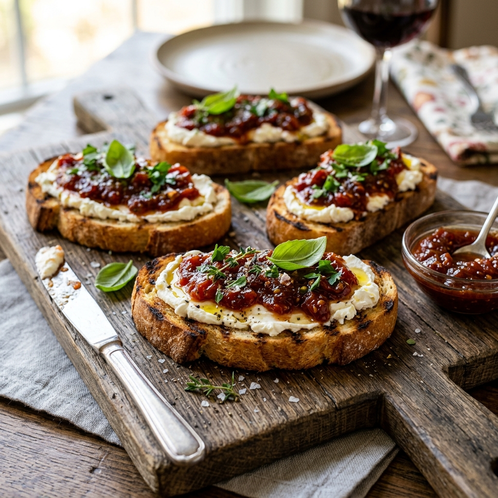
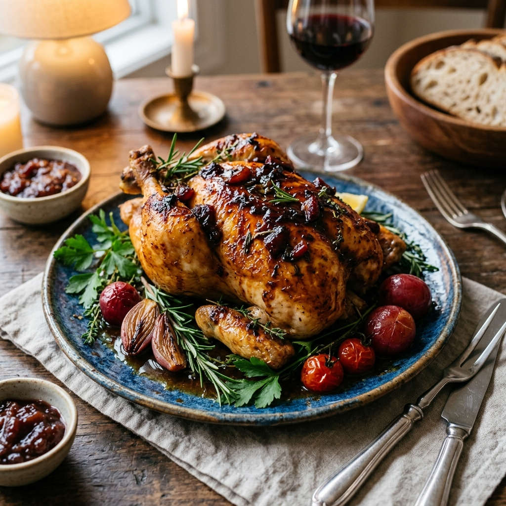
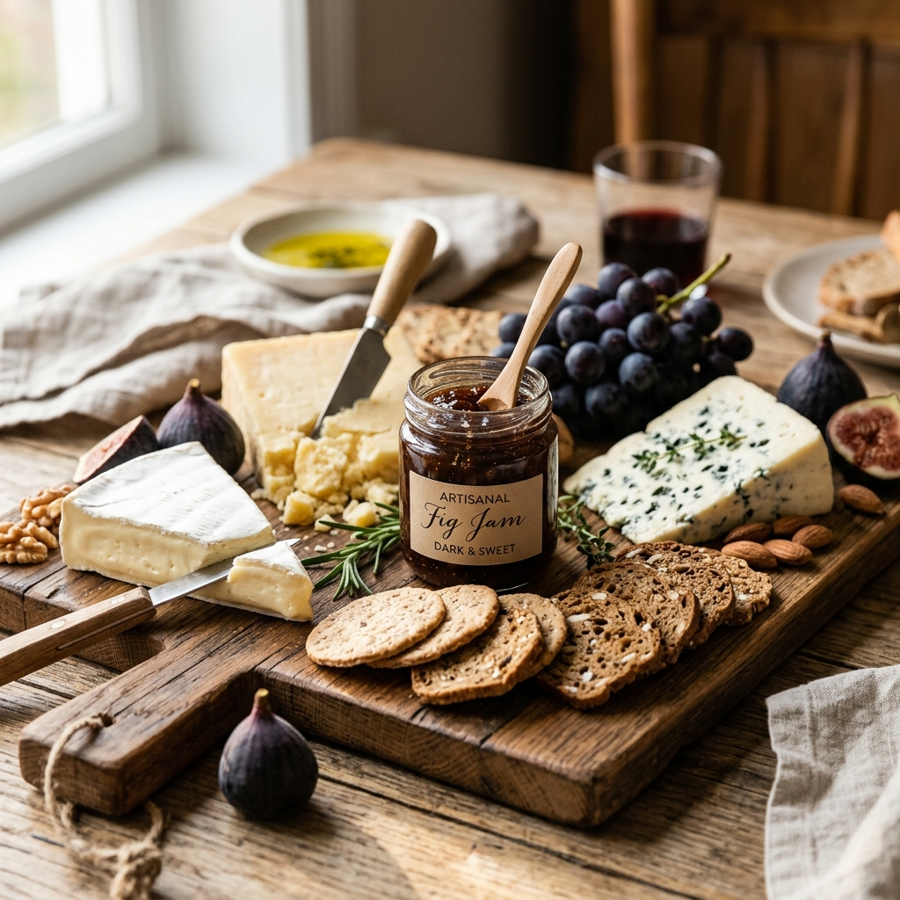

Mermeladas y conservas artesanales elaboradas en pequeños lotes, con frutas de estación y sin un solo aditivo.
Elaboradas a mano, en pequeños lotes
Solo fruta, azúcar y limón
Ingredientes de productores de Berisso
Frutas y verduras en su punto justo
Producción limitada para más calidad
Cada frasco, una historia
Dos grandes familias de sabores, elaboradas con el mismo cuidado y dedicación.
Más allá del desayuno — nuestras recetas favoritas para usar tus conservas.

Pan artesanal, queso de cabra cremoso y mermelada de tomate. Un contraste agridulce espectacular.

Mermelada de ciruela, soja y mostaza para glasear el pollo. Un plato salado elevado a otro nivel.

El maridaje perfecto para reuniones. Quesos maduros y nuestra mermelada de higo.